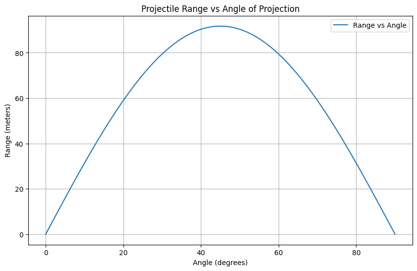

🯠Investigating the Range as a Function of the Angle of Projection
📌 Step 1: Deriving the Equations
Assume a projectile is launched from height \(h_0\) with initial velocity \(v_0\) at angle \(\theta\) from the horizontal.
We break motion into horizontal (x) and vertical (y) components.
a. Horizontal Motion (no acceleration)
\[
x(t) = v_0 \cos(\theta) \cdot t
\]
- Constant horizontal velocity
- No air resistance
- Uniform linear motion
b. Vertical Motion (with gravity)
\[
y(t) = h_0 + v_0 \sin(\theta) \cdot t - \frac{1}{2} g t^2
\]
- Affected by gravitational acceleration \(g\)
- Follows a parabolic trajectory
📌 Step 2: Time of Flight
To find the time when the projectile hits the ground, set \(y(t) = 0\):
\[
0 = h_0 + v_0 \sin(\theta) \cdot t - \frac{1}{2}gt^2
\]
This is a quadratic equation in \(t\):
\[
\frac{1}{2}gt^2 - v_0 \sin(\theta) \cdot t - h_0 = 0
\]
Solving with the quadratic formula:
\[
t = \frac{v_0 \sin(\theta) + \sqrt{(v_0 \sin(\theta))^2 + 2gh_0}}{g}
\]
(We discard the negative root because time must be positive.)
📌 Step 3: Calculating Range
Using the horizontal motion:
\[
R = x(t_{\text{flight}}) = v_0 \cos(\theta) \cdot t_{\text{flight}}
\]
Substitute the time of flight:
\[
R(\theta) = v_0 \cos(\theta) \cdot \left( \frac{v_0 \sin(\theta) + \sqrt{(v_0 \sin(\theta))^2 + 2gh_0}}{g} \right)
\]
Special case: When \(h_0 = 0\), the formula simplifies to:
\[
R = \frac{v_0^2 \sin(2\theta)}{g}
\]
🔄 Family of Solutions
A "family of solutions" refers to how initial conditions affect the trajectory:
| Parameter | Effect on Trajectory |
|---|---|
| \( v_0 \) | Increases both range and height |
| \( \theta \) | Changes range & height; max range at 45° (if \( h_0 = 0 \)) |
| \( h_0 \) | Increases total time of flight and hence range |
| \( g \) | Stronger gravity reduces range and hang time |
So varying any of these creates a new curve, but all follow the same general mathematical form — that’s your family of solutions.
📌 Step 4: Analysis of the Range
🔠Key Observations
- The range is maximum at \(\theta = 45^\circ\) when \(h_0 = 0\).
- The function is symmetric around \(45^\circ\).
- Range increases quadratically with \(v_0\).
- Higher launch height \(h_0\) extends the range.
Visualizing the Range
